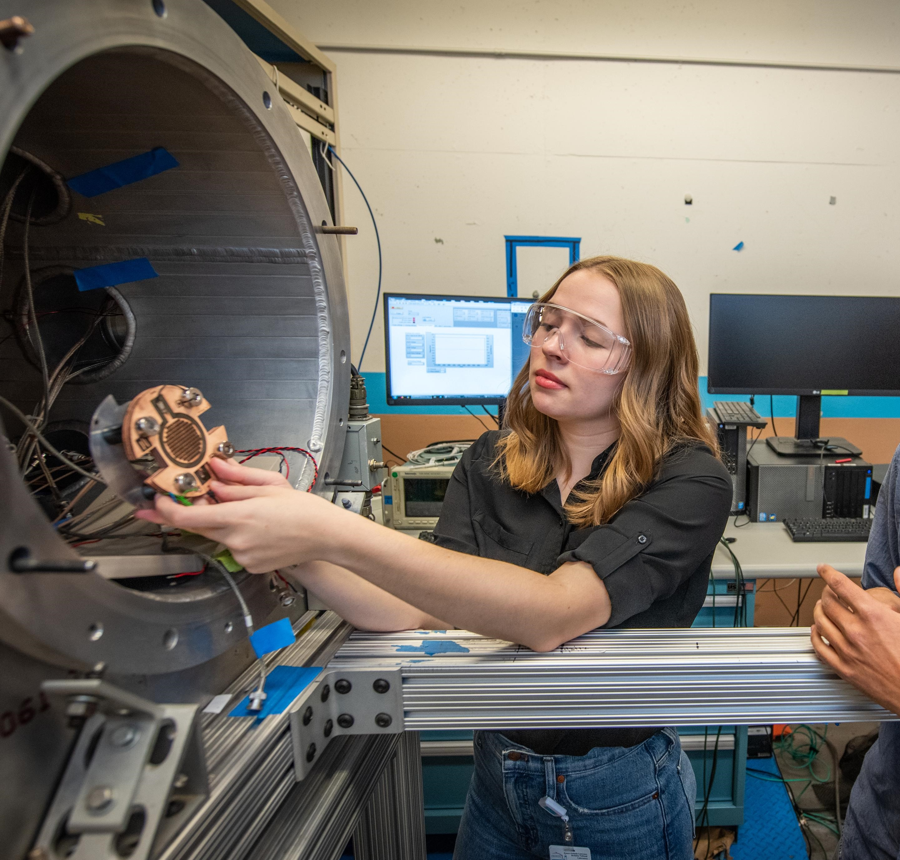

About
I'm a senior astrophysics major and CS minor at Wellesley College, currenly applying to PhD programs in astronomy/astrophysics! I currently work for the Astronomy Department at Wellesley
doing follow-up observations on exoplanet candidates for TESS and running the intro labs, as a research assistant at MIT working on unsupervised learning with the TESS dataset, and on
my senior thesis on matching the early rise of supernovae observed by TESS to theoretical models for progenitor systems. For a complete list of my research, you can check out
my Research page. In my nonexistent free time I was involved in on-campus theater, especially the Wellesley College Shakespeare Society, and the student
recreational observing club.

Education & Skills
Education
Wellesley College. 2017 - present, expected graduation May 2021. B.A. in Astrophysics, minor in CS. CGPA 3.68.
Skills
- Python - 3+ years
- NumPy, SciPy, AstroPy, Astroquery (esp. Astroquery.MAST), Keras, TensorFlow, Scikit-Learn, Pandas, PyMySQL, emcee
- HTML/CSS, Javascript - 3+ years
- Java, MATLAB, SQL, Git - 1+ years
- AIJ, ds9, TOPCAT
- English (native), French (intermediate reading/writing, basic speaking)
- Astronomy Outreach: Constellations/Sky Tours, Meades Observing, Public Talks
- Fabrication/Electrical Engineering - 3D Modeling (SolidWorks) and printing, laser cutting, soldering, machine shop tool use, parts testing
- Other: Microsoft Office, LaTeX, optical design
My Work
Research
Major Research Projects
Smaller/Other Projects/Work
Detection and Modeling
of TESS Observed SN
- Identifying a body of supernovae (SN) observed by TESS during their early rise and fitting models to the initial outburst to compare to theoretical models
for the progenitor systems and explosion mechanisms of said SN.
- Advised by Dr. Richard French (Wellesley) and Dr. Tansu Daylan (MIT)
- Sept. 2020 - present
TNS Access
- The Transient Name Server (TNS) has no Python port. So I wrote my own.
- Available on GitHub here
- Allows the user to scrape information on a given target given its name or to run their search function and download the resulting CSV file without opening a browser!
- January 2021
Time Variance in TESS
Light Curves
- Writing a machine learning pipeline to process TESS SPOC light curves and classify them to identify non-exoplanet variants.
- Using Python with Astroquery, Keras, TensorFlow, sklearn, and astropy.
- Methods paper (3rd author) in prep for spring 2021.
- February 2020 - Present
TESS Follow-Up at
Wellesley College
- Worked in Wellesley's student observing program taking and reducing data on exoplanet candidates using our 0.7m PlaneWave and AIJ/ds9.
- Took on additional roles as a target scheduler and writing up resource guides on telescope operation and data reduction.
- Nth author on TESS Delivers Five New Hot Giant Planets... for my work observing TOI 640 b
- November 2018; January 2020 - Present
Fiber Optic Fed Spectrometer
- Designed a fiber optic fed spectrometer as part of ASTR 304 in Spring 2019. Intended to complete project when I returned to campus in Spring 2020, but was postponed due to COVID
- Created the internal optics for the spectrometer, including purchasing parts and custom 3D printing pieces.
- Work towards completion includes redesigning the fiber guide system and completing the body of the spectrometer so it can be attached to the telescope.
- January-May 2019; February 2020 - March 2020. Ongoing.
A Compact Multi-Beam
Linear Accelerator
- SULI Internship at LBNL in the ATAP Division
- Worked on a compact accelerator project that used microelectromechanical wafers to handle the acceleration and focusing of He or Ar beams.
- Electrical engineering work upgrading the accelerator to a larger beam grid (112 aperatures from 9) and higher energy (1 MeV).
- Wrote Python simulations of the internal particle motion and e&m fields. Got to run on Lawrencium, LBNL's supercomputer!
- Fall 2019

Working on installing a wafer stack to the vacuum chamber. (Extremely staged photo taken by lab PR team.)
Double Quasars in Hubble Data
- KNAC REU at Middlebury College
- Wrote Python program to backsearch the Hubble catalog by coordinates in the SDSS quasar catalog and produced contour plots to manually search for double quasar system candidates.
- Coded an available volume analysis of the candidates identified.
- Code for the project can be found here
- Summer 2019
Hubble Contours
- Project derived from double quasar search work where as part of a hackathon I produced a Python package that produces contour plots around a given
set of coordinates, provided those coordinates were imaged by Hubble
- Code available here on GitHub
Wellesley Resources App
- CS 220: Human Computer Interaction. Summer 2020
- Worked with a team to design and build an application to consolidate access to Wellesley's student resources.
- Work was done with UX at the focus of the design.
- More details here
Night Assisting
- TA for the intro astronomy night labs (ASTR 100/107) at Wellesley.
- Responsibilities included operating historic telescopes for guided observing, helping with Meades, and giving constellation quizzes.
- Also took on a larger role working at public nights at the observatory and running smaller events (Girl Scouts, local HS classes, etc.)
- December 2018 - present.
Simple N-Body Galaxy Mergers
- ASTR 210: Cosmology. Spring 2020
- Python program to loosely model the interacting forces between mass elements in two galaxies.
- Code can be found here
Python Analysis of Stellar
Flares in K2 Data
- MIT 12.411 Astronomy Field Camp at Lowell Observatory. January 2019.
- Analyzed a variety of pre-existing Python packages for their usefulness in identifying stellar flares in K2 data.
Contact
Email: lgordon6 -@- wellesley.edu